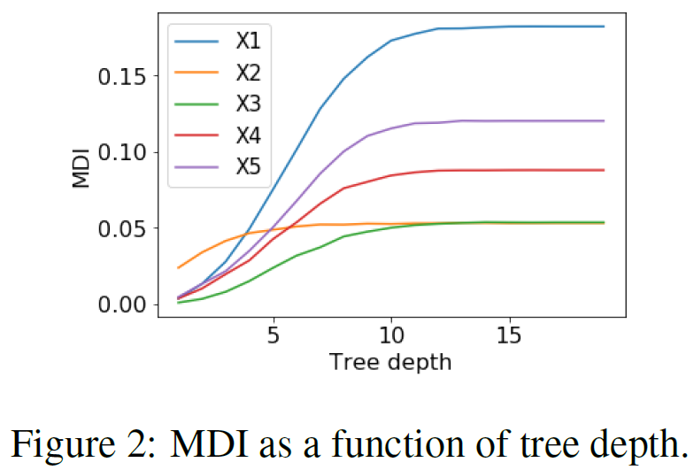

Chapter 6 Overfitting
I am often asked whether we should “blame” the model or the importance measure/ feature contribution for the apparent overfitting which leads to bias. Maybe at least some of our results are due to a lack of model tuning ?
library(titanic)
library(ranger)
naRows = is.na(titanic_train$Age)
data2=titanic_train[!naRows,]
rf1 =ranger(Survived ~ Age + Sex + Pclass + PassengerId, data=data2, num.trees=100,mtry=2)
rf2 =ranger(Survived ~ Age + Sex + Pclass , data=data2, num.trees=100,mtry=2)
oob1 = round(rf1$prediction.error,3)
oob2 = round(rf2$prediction.error,3)It is certainly true that e.g. for the Titanic data the random forest model performs better without the PassengerId variable than with (oob prediction error of 0.133 versus 0.14). This observation is only partially useful since feature selection is a complex problem and clearly not guided by SHAP or MDI values.
6.1 Tree Depth
SHAP as a function of tree depth
In their paper the paper A Debiased MDI Feature Importance Measure for Random Forests (Li et al. 2019) investigate the dependence of MDI on minimum leaf size and tree depth. To mimic the major experiment setting in the paper (Strobl et al. 2007), data is generated as follows. We sample n = 200 observations, each containing 5 features. The first feature is generated from standard Gaussian distribution. The second feature is generated from a Bernoulli distribution with \(p = 0.5\). The third/fourth/fifth features have 4/10/20 categories respectively with equal probability of taking any states. The response label y is generated from a Bernoulli distribution such that \(P(y_i = 1) = (1 + x_{i2})/3\). We vary the max tree depth of RF from 1 to 20 and record the MDI of every feature. The results are shown in Fig. 2 below. As tree depth increases, the minimum leaf size generally decreases exponentially. Therefore, we expect the MDI of noisy features to become larger for increasing tree depth. We vary the maximum depth from 1 to 20 and record the MDI of every feature. The results shown in Fig. 2 are consistent with our expectation. MDI importance of noisy features increase when the tree depth increases from 1 to 20.

We computed inbag and oob SHAP values for the same data and display the results in Figure 6.1.
par(mfrow=c(1,2))
matplot(shap_depth_in , type="l",lty=1,lwd=2,xlab = "tree depth", ylab = "SHAP Importance",xlim = c(1,15), main = "inbag");grid()
#legend("topright", lty=1,lwd=2, col=1:5, legend = colnames(shap_depth_oob))
matplot(shap_depth_oob , type="l",lty=1,lwd=2,xlab = "tree depth", ylab = "SHAP Importance",xlim = c(1,19), main = "OOB");grid()
legend("topright", lty=1,lwd=2, col=1:5, legend = colnames(shap_depth_oob))Figure 6.1: SHAP values as a function of tree depth.
6.2 Signal to Noise
References
Li, Xiao, Yu Wang, Sumanta Basu, Karl Kumbier, and Bin Yu. 2019. “A Debiased Mdi Feature Importance Measure for Random Forests.” Edited by H. Wallach, H. Larochelle, A. Beygelzimer, F. d Alché-Buc, E. Fox, and R. Garnett, 8049–59. http://papers.nips.cc/paper/9017-a-debiased-mdi-feature-importance-measure-for-random-forests.
Strobl, Carolin, Anne-Laure Boulesteix, Achim Zeileis, and Torsten Hothorn. 2007. “Bias in Random Forest Variable Importance Measures: Illustrations, Sources and a Solution.” BMC Bioinformatics 8 (1): 25.